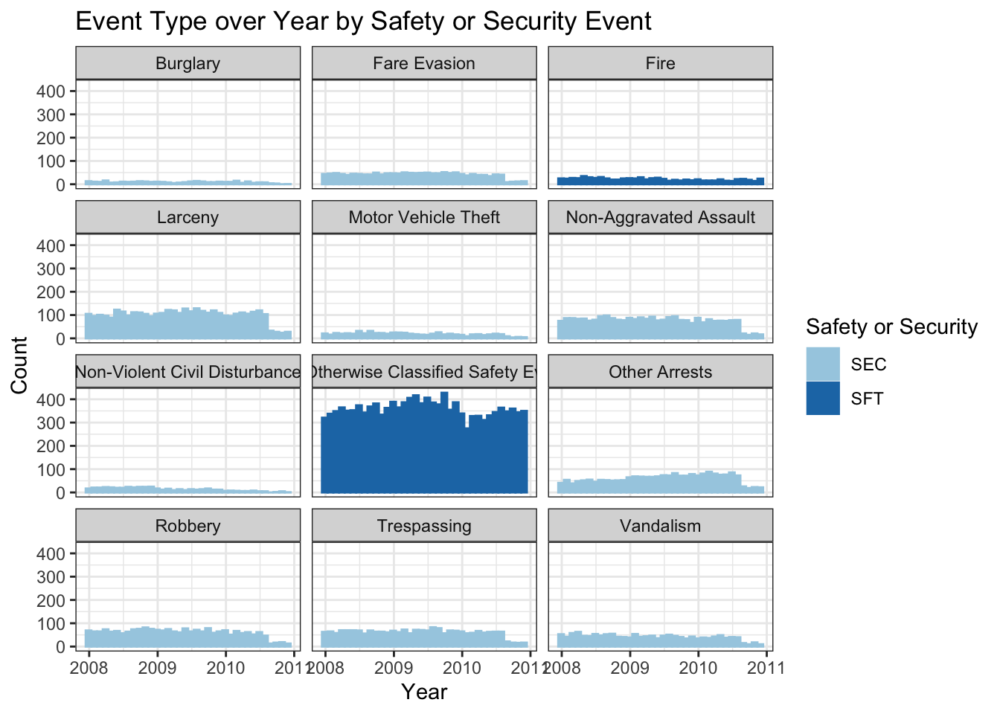

Code
library(tidyverse)
library(ggplot2)
library(lubridate)
library(knitr)
library(kableExtra)
knitr::opts_chunk$set(echo = TRUE, warning=FALSE, message=FALSE)library(tidyverse)
library(ggplot2)
library(lubridate)
library(knitr)
library(kableExtra)
knitr::opts_chunk$set(echo = TRUE, warning=FALSE, message=FALSE)I decided to use a data set from the U.S. Department of Transportation on Non-major Safety Events. This data contains the transportation agency name, the location of the event, the type of event, the number of events, the number of injuries, and more variables that are detailed later. I joined it with 2 other data sets, one called Federal Funding Allocation which I used for location and population information, and one called abbreviations which I used for transit agency name abbreviations.
The research questions that I wanted to answer for this project are:
What modes of transit have the most total injuries? Are the number and type of events changing over time? Which agencies have the most total events? What is the proportion of different injury types over time?
I wanted to use these as a way to learn about the data, and provide some interesting insights.
This is just reading in the 3 different data sets to use. For simplicity, the data sets are labeled as: nmse = Non-major Safety Events, ffa = Federal Funding Allocation, abb = Abbreviations.
nmse = read_csv("_data/MirandaManka_data/non_major_safety_events.csv", show_col_types = FALSE)
ffa = read_csv("_data/MirandaManka_data/Federal_Funding_Allocation.csv", show_col_types = FALSE)
abb = read_csv("_data/MirandaManka_data/abbreviations.csv", show_col_types = FALSE)I changed the variable names to be easier to work with and more uniform (snake_case). Next, I used the month and year variables to create a new date variable (in a date format). I dropped a variable I won’t be using (drop ntd_id_4 because I’ll use ntd_id_5 instead).
nmse = nmse %>%
rename(ntd_id_5 = `5 Digit NTD ID`, ntd_id_4 = `4 Digit NTD ID`,
agency = Agency, mode = Mode, service_type = `Type of Service`,
month = Month, year = Year, sft_sec = `Safety/Security`,
event_type = `Event Type`, location = Location,
location_group = `Location Group`, total_events = `Total Events`,
customer_injuries = `Customer Injuries`, worker_injuries = `Worker Injuries`,
other_injuries = `Other Injuries`, total_injuries = `Total Injuries`)
nmse = nmse %>%
mutate("date" = make_date(year = year, month = month)) %>%
relocate(date, .after = year)
nmse = nmse %>%
select(-c(ntd_id_4))This data set has more variables than I need so I selected just the variables I want to keep, then renaming them. Next, I kept only distinct observations (getting rid of any repeated rows, which I have because I dropped most of the variables in the data set that differentiated them). I did this to get this data ready to join to the nmse data, so I want this data to have unique observations for my key variable (ntd_id_5). Then, I changed ntd_id_5 to numeric (there were some cases that had a “-” in it but I didn’t need those because they indicated a different agency type so I didn’t need to join them), then I filtered out the observations where ntd_id_5 was NA. The last step in getting this data ready for the join was to finish narrowing down the observations to unique cases. I filtered out any observations where prim_uza_code, prim_uza_name, and prim_uza_pop were NA because they would not provide any information and some of them were duplicate observations where the other had the information. Finally, for the remaining cases where ntd_id_5 was not unique, I had to go through and look up online which one was the correct/true case. I did this on the U.S. Department of Transportation website, searching through the NTD Transit Agency Profiles page, listed in my bibliography.
ffa = ffa %>%
select(c("5 Digit NTD ID", "Agency", "Primary UZA Code",
"Primary UZA Name", "Primary UZA Population"))
ffa = ffa %>%
rename(ntd_id_5 = `5 Digit NTD ID`, agency_ffa = Agency,
prim_uza_code = `Primary UZA Code`, prim_uza_name = `Primary UZA Name`,
prim_uza_pop = `Primary UZA Population`)
ffa = ffa %>%
distinct()
ffa = ffa %>%
mutate_at("ntd_id_5", as.numeric)
ffa = ffa %>%
filter(!is.na(ntd_id_5))
ffa = ffa %>%
filter(!is.na(prim_uza_code) & !is.na(prim_uza_name) & !is.na(prim_uza_pop))
ffa = ffa %>%
filter(!row_number() %in% c(440, 445, 470, 501, 512, 516, 732, 764, 911, 912, 1124))
ffa = ffa %>%
filter(!row_number() %in% c(53, 236, 382, 542, 543, 574, 934))I renamed a variable, then trimmed any leading or trailing space from both variables. Since I am joining by strings, I want them to match as close as possible so I wanted to make sure a space wouldn’t be an issue.
abb = abb %>%
rename(agency = Full)
abb = abb %>%
mutate(Abbreviation = str_trim(Abbreviation, side = "both"))
abb = abb %>%
mutate(agency = str_trim(agency, side = "both"))I joined nmse and ffa using a left join, because I want to keep all of the observations in nmse and only join in the ffa data where it matches by ntd_id_5. The total rows in the joined data set is 81857 which is what I expected (total rows from nmse, which doesn’t change), as well as the 20 columns (16+5-1), so I am good to move forward. Next, I dropped agency_ffa (the ffa copy of agency, which I had just to do a quality check if something went wrong), which brings the total columns down to 19. Next, I trimmed any leading or trailing spaces just in agency just in case, to get it ready for another join for abbreviations (since I am joining on the name). Finally, I did another left join by agency, bringing in the abbreviations that matched with my data set. The total rows in the joined transit data set is 81857 which is what I expected (total rows from join/nmse, which doesn’t change), as well as the 20 columns (19+2-1), so I am good to move forward. After this I just have some cleaning to do of this joined transit data set.
join = left_join(nmse, ffa, by = "ntd_id_5")
join = join %>%
select(-c(agency_ffa))
join = join %>%
mutate(agency = str_trim(agency, side = "both"))
transit = left_join(join, abb, by = "agency")I renamed and relocated the abbreviation variable to make it easier to work with. I individually changed some of the abbreviations after looking at my data because I noticed some of the strings didn’t quite match up because of slight differences. After this I dropped prim_uza_code because I won’t use it.
transit = transit %>%
rename(abbrev = Abbreviation) %>%
relocate(abbrev, .after = agency)
transit = transit %>%
mutate(abbrev = ifelse(ntd_id_5 == 40034, "MTD", abbrev),
abbrev = ifelse(ntd_id_5 == 40003, "MATA", abbrev),
abbrev = ifelse(ntd_id_5 == 60008, "METRO", abbrev),
abbrev = ifelse(ntd_id_5 == 30034, "MTA", abbrev),
abbrev = ifelse(ntd_id_5 == 40105, "PRHTA", abbrev),
abbrev = ifelse(ntd_id_5 == 50003, "KT", abbrev),
abbrev = ifelse(ntd_id_5 == 40008, "CATS", abbrev),
abbrev = ifelse(ntd_id_5 == 90002, "DTS", abbrev),
abbrev = ifelse(ntd_id_5 == 1, "King County Metro", abbrev))
transit = transit %>%
select(-c(prim_uza_code))The data set I have now after the joining and cleaning is made up of 81,857 rows and 19 columns. This data set details different transit records. Each observation contains transit agency (numerical id, full agency name, and abbreviation), various categorical variables (mode of service [bus, heavy rail, trolleybus, etc.], type of service [directly operated, purchased, etc.], safety or security, event type [robbery, fire, etc.], location [in transit vehicle, etc], location group [facility, vehicle, or other], and nearest primary urbanized area name), as well as some numerical variables (month, year, date, total events, customer injuries, worker injuries, other injuries, total_injuries, and nearest primary urbanized area population). There are many cases where there may be multiple rows with the same agency, month, and year, but is due to the different combinations of categorical variables (for example, one may be agency a, mode of bus, month 1 and year 2008; the next agency a, mode of train, month 1 and year 2008). From my data source: “there will be one entry for any transit mode/location with at least one occurrence for the given month”.
print(summarytools::dfSummary(transit,
varnumbers = FALSE,
plain.ascii = FALSE,
style = "grid",
graph.magnif = 0.70,
valid.col = FALSE),
method = 'render',
table.classes = 'table-condensed')| Variable | Stats / Values | Freqs (% of Valid) | Graph | Missing | |||||||||||||||||||||||||||||||||||||||||||||||||||||||
|---|---|---|---|---|---|---|---|---|---|---|---|---|---|---|---|---|---|---|---|---|---|---|---|---|---|---|---|---|---|---|---|---|---|---|---|---|---|---|---|---|---|---|---|---|---|---|---|---|---|---|---|---|---|---|---|---|---|---|---|
| ntd_id_5 [numeric] |
|
612 distinct values |  |
0 (0.0%) | |||||||||||||||||||||||||||||||||||||||||||||||||||||||
| agency [character] |
|
|
 |
0 (0.0%) | |||||||||||||||||||||||||||||||||||||||||||||||||||||||
| abbrev [character] |
|
|
 |
39913 (48.8%) | |||||||||||||||||||||||||||||||||||||||||||||||||||||||
| mode [character] |
|
|
 |
0 (0.0%) | |||||||||||||||||||||||||||||||||||||||||||||||||||||||
| service_type [character] |
|
|
 |
0 (0.0%) | |||||||||||||||||||||||||||||||||||||||||||||||||||||||
| month [numeric] |
|
12 distinct values |  |
0 (0.0%) | |||||||||||||||||||||||||||||||||||||||||||||||||||||||
| year [numeric] |
|
15 distinct values |  |
0 (0.0%) | |||||||||||||||||||||||||||||||||||||||||||||||||||||||
| date [Date] |
|
176 distinct values |  |
0 (0.0%) | |||||||||||||||||||||||||||||||||||||||||||||||||||||||
| sft_sec [character] |
|
|
 |
0 (0.0%) | |||||||||||||||||||||||||||||||||||||||||||||||||||||||
| event_type [character] |
|
|
 |
0 (0.0%) | |||||||||||||||||||||||||||||||||||||||||||||||||||||||
| location [character] |
|
|
 |
0 (0.0%) | |||||||||||||||||||||||||||||||||||||||||||||||||||||||
| location_group [character] |
|
|
 |
0 (0.0%) | |||||||||||||||||||||||||||||||||||||||||||||||||||||||
| total_events [numeric] |
|
699 distinct values |  |
0 (0.0%) | |||||||||||||||||||||||||||||||||||||||||||||||||||||||
| customer_injuries [numeric] |
|
121 distinct values |  |
13372 (16.3%) | |||||||||||||||||||||||||||||||||||||||||||||||||||||||
| worker_injuries [numeric] |
|
37 distinct values |  |
13372 (16.3%) | |||||||||||||||||||||||||||||||||||||||||||||||||||||||
| other_injuries [numeric] |
|
53 distinct values |  |
13372 (16.3%) | |||||||||||||||||||||||||||||||||||||||||||||||||||||||
| total_injuries [numeric] |
|
129 distinct values | |
13372 (16.3%) | |||||||||||||||||||||||||||||||||||||||||||||||||||||||
| prim_uza_name [character] |
|
|
 |
444 (0.5%) | |||||||||||||||||||||||||||||||||||||||||||||||||||||||
| prim_uza_pop [numeric] |
|
350 distinct values |  |
444 (0.5%) |
Generated by summarytools 1.0.1 (R version 4.2.1)
2022-09-03
I am following my research questions and started by looking at which modes of transit have the most total injuries. I have a table of the top 5 modes of transit by the sum of the total injuries. These top 5 in order are MB = Bus, HR = Heavy Rail, LR = Light Rail, TB = Trolleybus, and DR = Demand Response. This may mean that there are more worrisome aspects about these modes of transit, however, it could be that simply more people take these modes of transit in larger cities, where there are generally more incidents because of more people. Further analysis of ridership could be analyzed to make further conclusions.
transit %>%
select(mode, total_injuries) %>%
group_by(mode) %>%
summarise(sum_tot_inj = sum(total_injuries, na.rm = TRUE)) %>%
arrange(desc(sum_tot_inj)) %>%
slice(1:5) %>%
kable(col.names = c("Mode of Transit", "Sum of Total Injuries"),
caption = "Sum of Total Injuries by Mode of Transit") %>%
kable_minimal()| Mode of Transit | Sum of Total Injuries |
|---|---|
| MB | 102898 |
| HR | 72406 |
| LR | 13282 |
| DR | 12065 |
| TB | 1759 |
The next question I looked at was whether the number and type of events changed over time. I made a histogram and used facet_wrap to make a separate graph for each event type, then added color to show which events are safety events and which are security events. While looking at the graphs I noticed something weird, that for most event types there was a higher count for the first few years that looks like a bump, then the count decreased after that. That was the case for all security events but not the safety events. I wanted to investigate that further.
ggplot(transit, aes(x = date, color = sft_sec)) +
geom_histogram(bins = 36, aes(fill = sft_sec)) +
facet_wrap(~ event_type, nrow = 4) +
labs(title = "Event Type over Year by Safety or Security Event", x = "Year",
y = "Count", fill = guide_legend("Safety or Security"),
color = guide_legend("Safety or Security")) +
theme_bw() +
scale_color_brewer(palette = "Paired") +
scale_fill_brewer(palette = "Paired")I created two simple tables to show the inconsistencies I discovered with this data. The first table shows the count of total events by year. I saw that the count was 10830 for 2008, 11495 for 2009, and 8776 for 2010, and then drops dramatically to around 4000 for 2011 and after (and only 2099 for 2022 because the year is still in progress). This is important because it identifies that the counts by year vary a lot more than would be expected, and indicate there is likely something going on.
The second is a table with year, event type, and count. This table shows the issue most clearly. I made it so that it shows 2010 and 2011, because those are the years it changes. In 2008-2010, the data have all of the event types, but for some reason 2011 and after only have “Fire” and “Not Otherwise Classified Safety Events”. The graph from above showed an unexpected insight, those two event types make up “safety” events in the sft_sec variable, and the rest are security. So for some reason, security events stopped being added after 2010. I tried to Google this to see if I could find anything about a different reporting system, but I settled on the fact that the data set is just flawed.
At this point, it was too late to change data sets. Of course, I wish I would have noticed this earlier but because it was buried a little bit, I didn’t notice in the cleaning stage. So I decided to just work with this data the best I can.
transit %>%
select(total_events, year) %>%
group_by(year) %>%
summarize(n=n()) %>%
kable(col.names = c("Year", "Count"),
caption = "Count of Total Events by Year") %>%
kable_minimal()| Year | Count |
|---|---|
| 2008 | 10830 |
| 2009 | 11495 |
| 2010 | 8776 |
| 2011 | 4131 |
| 2012 | 3993 |
| 2013 | 4159 |
| 2014 | 4399 |
| 2015 | 4651 |
| 2016 | 4737 |
| 2017 | 4697 |
| 2018 | 4904 |
| 2019 | 4776 |
| 2020 | 3988 |
| 2021 | 4222 |
| 2022 | 2099 |
transit %>%
select(total_events, year, event_type) %>%
filter(year == 2010 | year == 2011) %>%
group_by(year, event_type) %>%
summarize(n=n()) %>%
kable(col.names = c("Year", "Event Type", "Count"),
caption = "Count of Event Type by Year for 2010 and 2011") %>%
kable_minimal()| Year | Event Type | Count |
|---|---|---|
| 2010 | Burglary | 83 |
| 2010 | Fare Evasion | 369 |
| 2010 | Fire | 221 |
| 2010 | Larceny | 968 |
| 2010 | Motor Vehicle Theft | 152 |
| 2010 | Non-Aggravated Assault | 696 |
| 2010 | Non-Violent Civil Disturbance | 60 |
| 2010 | Not Otherwise Classified Safety Events | 4024 |
| 2010 | Other Arrests | 726 |
| 2010 | Robbery | 531 |
| 2010 | Trespassing | 571 |
| 2010 | Vandalism | 375 |
| 2011 | Fire | 260 |
| 2011 | Not Otherwise Classified Safety Events | 3871 |
So now that I figured out the problem and it’s too late to turn back, I have to decide: what do I do about this data inconsistency? I decided to split my data into two parts. The first was a 3 year data set from 2008 to 2010 that is essentially balanced (each year has approximately similar total cases) and more complete with all of the event types, but short (only a few years of data). The second was an 11 year data set that had more longitudinal data but lacking most of the event types. I’m not sure there even is a perfect solution but I thought this would be fine for the purpose of this project. I felt like continuing with just the one data set when the first few years had such different counts to later years (around 11000 compared to 4000) would make the interpretation a little bit unreliable or less significant.
transit_2008to2010 = transit %>%
filter(year < 2011)
transit_2011to2021 = transit %>%
filter(year > 2010 & year < 2022)I wanted to re-do the graph from above with the shortened data set to see if it was better. It shows more consistency over the 3 years, and interestingly the not otherwise classified safety events are still the most common by far. This does make me wonder what those might be, what else is being reported? I tried to do some research but didn’t really see much online. I also find it interesting that only fire is listed separately from the not otherwise classified safety events category for safety (and those are the only 2 event types that fall under safety in this data), but for security there are 10 different categories. The counts for most of the different events types stayed similar across the 3 years.
ggplot(transit_2008to2010, aes(x = date, color = sft_sec)) +
geom_histogram(bins = 36, aes(fill = sft_sec)) +
facet_wrap(~ event_type, nrow = 4) +
labs(title = "Event Type over Year by Safety or Security Event", x = "Year",
y = "Count", fill = guide_legend("Safety or Security"),
color = guide_legend("Safety or Security")) +
theme_bw() +
scale_color_brewer(palette = "Paired") +
scale_fill_brewer(palette = "Paired")
I wanted to look a little bit at the different transit agencies and the number of total events. I decided to use the transit_2011to2021 data for this one because I wanted to do a line chart so I wanted more years of data. I started by making a temporary data frame with data grouped by abbrev (agency name abbreviation) and year and then had the sum for each agency year combo. Next, I made a data frame that removed the rows with NA values (I am only finding the top 5 agencies here and didn’t want NA) then found the top 5 agencies with the highest sum of total events. Then I just joined those two data frames so that I ended up with 55 rows and 3 columns, where there are 11 rows per agency (one for each year) and each has the sum of total events for that year for that agency, and this data set has the top 5 agencies. I then made this a line graph with year on the x-axis, the sum of the events on the y-axis, and each line a different color representing a different transit agency. I think what is really interesting about this visualization is how much the top agency (NYCT - MTA New York City Transit) stands out. It makes sense because New York City has so many people (including a high population density), which can come with more crime/things happening (or, non-major safety events). Also, all of the top 5 transit agencies shown in this graph are in big cities (CTA = Chicago, MBTA = Boston, SEPTA = Philadelphia, WMATA = Washington, D.C.), but are more even and overlapping with each other in terms of total events.
temp = transit_2011to2021 %>%
select(abbrev, year, total_events) %>%
group_by(abbrev, year) %>%
summarise(sum_total_events = sum(total_events, na.rm = TRUE))
transit_na_drop = transit_2011to2021 %>%
drop_na(abbrev)
top_5 = transit_na_drop %>%
select(abbrev, total_events) %>%
group_by(abbrev) %>%
summarise(sum_total_events = sum(total_events, na.rm = TRUE)) %>%
arrange(desc(sum_total_events)) %>%
slice(1:5) %>%
select(-sum_total_events)
join_for_graph = left_join(top_5, temp)
ggplot(join_for_graph, aes(x = year, y = sum_total_events, color = abbrev)) +
geom_line() +
labs(title = "Sum of Total Events by Year for Top 5 Transit Agencies", x = "Year",
y = "Sum of Total Events", color = guide_legend("Agency Abbreviation")) +
theme_bw() +
scale_color_brewer(palette = "Set2")
To answer this question, I first pivoted a few rows from the transit_2011to2021 data. I used this data since am looking at multiple years. I only used customer injuries, worker injuries, and other injuries (not total injuries because I wanted the parts of a whole). Then I made a percent stacked bar chart of the injury type over time, with the injury type shown by color. Looking at the graph, there does seem to be a slight increase in the proportion of worker injuries over time. This could be something to investigate in the future, if there is some reason more workers may be getting injured.
long_transit_2011to2021 = transit_2011to2021 %>%
select(date, customer_injuries:other_injuries) %>%
pivot_longer(cols = customer_injuries:other_injuries,
names_to = "injuriy_type",
values_to = "count")
ggplot(long_transit_2011to2021, aes(x = date, y = count, fill = injuriy_type)) +
geom_bar(position = "fill", stat = "identity") +
labs(title = "Injury Type Over Time", x = "Date",
y = "Percent", fill = guide_legend("Injury Type"),
color = guide_legend("Injury Type")) +
theme_bw() +
scale_color_brewer(palette = "Set2") +
scale_fill_brewer(palette = "Set2")I enjoyed doing this project and I learned a lot along the way. Although I have experience using R, I haven’t really used the tidyverse before, or piping, but after using them for a few weeks for this class and project, I can see how great they are. Since I haven’t used them, there was definitely a lot to adjust to and to get rid of some old habits. I found it really helpful for data cleaning though, so worth it, and will definitely be using it in the future. The most challenging part of this project for me was choosing the data set. I a day just looking for data, from a variety of different topics, and from different sources. I was happy with my data, began cleaning it, joined in some other data, then started creating visualizations and tables when I realized the problem with the data set (with the event type and total events being limited for most years). I continued with the exploration and analysis the best I could with the data I had, using different subsets of the data for different parts of the analysis. Knowing these issues with the data set, I probably would not continue with much further analysis of this data. I wish I would have known about the issues and would have chosen a different data set, either another one about transportation data, or something entirely different. I would have liked to do more statistical analysis and uncover more about this data, as well as keep working to make more complicated and interesting graphs. I would also like to learn how to keep data updated, so that when another month/year of data is added to the source website online, I can bring it into RStudio automatically but that may be a different project to learn.
My first question asked which mode of transit had the most injuries, and I determined it was the bus, with heavy rail in second and light rail in third. My second question showed that event type wasn’t really changing over time that much and for some reason, a lot of the events were being classified as “not otherwise classified safety events”. My last question determined that while the proportion of different injury types over time isn’t changing that much, there does seem to be a slow increase in the proportion of worker injuries. I thought the most interesting and informative graph was the line graph with the top 5 transit agencies sum of total events, which showed that the NYCT had a lot more total yearly events than the next closest. It was also the hardest to make but I probably didn’t take the most direct/efficient way (although I was proud of the process and that I was able to make it work in the end).
I ended up not using some variables, like what I joined in with the Federal Funding Allocation data for population. Given the data issues, there are still some questions left unanswered, like why is that data missing? I wonder if the event type distribution would have changed over the years, and if the number of total events and injuries would keep increasing? But there are also some questions that would be unanswered even with better data, like what statistical differences be found between different variables? I think there will always be some unanswered questions to think about, and there is always more that could be done.
“Abbreviations.” Department of Transportation, 2013. https://www.fhwa.dot.gov/policy/2013cpr/pdfs/abbreviations.pdfhttps://www.fhwa.dot.gov/policy/2013cpr/pdfs/abbreviations.pdf
“Federal Funding Allocation: Department of Transportation - Data Portal.” Data.Transportation.gov, https://data.transportation.gov/Public-Transit/Federal-Funding-Allocation/5x22-djnv/data.
Holtz, Yan. The R Graph Gallery, https://r-graph-gallery.com/.
“Non-Major Safety Events: Department of Transportation - Data Portal.” Data.Transportation.gov, https://data.transportation.gov/dataset/Non-major-Safety-Events/urir-txqm/data.
“NTD Transit Agency Profiles.” NTD Transit Agency Profiles | FTA, https://www.transit.dot.gov/ntd/transit-agency-profiles.
R Core Team (2022). R: A language and environment for statistical computing. R Foundation for Statistical Computing, Vienna, Austria. URL https://www.R-project.org/.
Rolfe, Meredith. DACSS 601 August 2022 Course Blog Challenge Solutions. https://dacss.github.io/DACSS_601_August2022_v2/. Meredith Rolfe’s solution posts for challenges 1-8
Wickham, Hadley, and Garrett Grolemund. R For Data Science: Import, Tidy, Transform, Visualize and Model Data. O’Reilly, 2017.